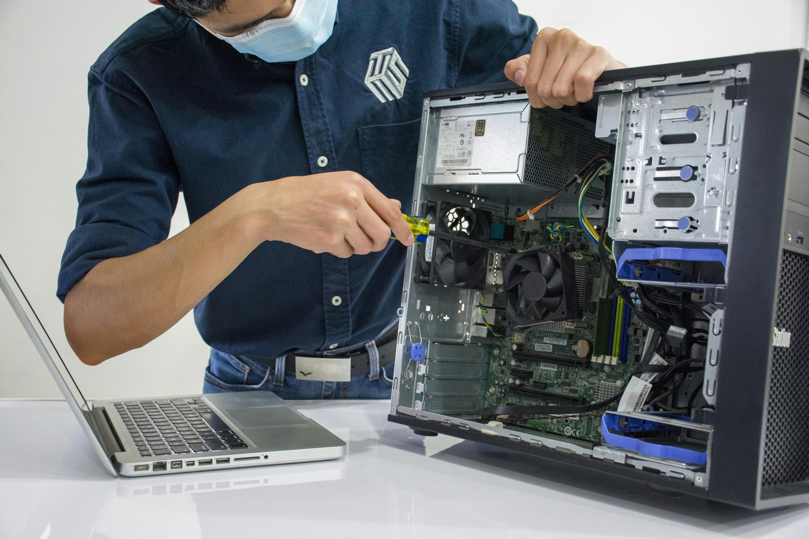

Mục lục
Giới thiệu chung
Bài viết này tập trung vào các ngành nghề lớn trong công nghệ thông tin tại Việt Nam, giúp bạn hiểu rõ đặc thù công việc, thị trường tuyển dụng và xu hướng phát triển trong thời đại số.
IT tại Việt Nam tiếp tục phát triển mạnh, đặc biệt trong các lĩnh vực: an ninh mạng, quản trị mạng, bảo dưỡng máy tính, phát triển phần mềm, dữ liệu lớn và thiết kế sản phẩm số. Theo báo cáo từ các công ty công nghệ hàng đầu, nhu cầu tuyển dụng nhân viên IT tăng 25-30% mỗi năm tại Việt Nam.
Nội dung được trình bày theo từng mục rõ ràng, dễ đọc và phù hợp với cả laptop lẫn điện thoại. Mục đích của bài viết là giúp bạn nhận diện đúng ngành phù hợp với năng lực, đam mê và mục tiêu nghề nghiệp của bản thân.
1. An ninh mạng
An ninh mạng là một trong những ngành "hot" nhất hiện nay và được coi là chìa khóa bảo vệ của thế giới số. Doanh nghiệp Việt Nam và quốc tế đều cần bảo vệ hệ thống, dữ liệu khách hàng và tài sản số khỏi mã độc, lừa đảo, ransomware, tấn công DDoS, APT (Advanced Persistent Threat) và xâm nhập trái phép. Theo thống kê, các cuộc tấn công mạng gây thiệt hại hàng tỷ USD mỗi năm trên toàn thế giới.
Nội dung công việc
Chuyên gia an ninh mạng làm việc trên nhiều khía cạnh khác nhau: kiểm tra lỗ hổng bảo mật (penetration testing) để tìm ra điểm yếu trong hệ thống, giám sát mạng 24/7 bằng các công cụ SIEM để phát hiện hành vi lạ, phản ứng kịp thời khi có sự cố bảo mật, thiết kế giải pháp phòng thủ toàn diện từ tường lửa đến endpoint protection, và xây dựng chính sách bảo mật cho tổ chức. Công việc đòi hỏi tư duy logic, khả năng phân tích sâu, sáng tạo trong tìm kiếm lỗi và sẵn sàng ứng phó khẩn cấp trong tình huống cấp bách.
Kỹ năng cần thiết
Để làm việc trong ngành an niên mạng, bạn cần nắm vững kiến thức về hệ điều hành (Windows, Linux, macOS), kiến trúc mạng TCP/IP, bảo mật web (OWASP top 10), mã hóa (RSA, AES), bảo mật ứng dụng và lập trình cơ bản. Cũng rất quan trọng là hiểu biết về các công cụ như Wireshark, Metasploit, Kali Linux, Burp Suite, Nessus, Snort, ELK Stack và các platform kiểm tra lỗ hổng. Tiếng Anh chuyên ngành là yêu cầu bắt buộc vì hầu hết tài liệu bảo mật, CVE database, security blog đều viết bằng tiếng Anh. Kiến thức về cloud security (AWS, Azure, GCP), container security và API security cũng ngày càng trở nên quan trọng.
Thị trường tuyển dụng
Ngành này có nhu cầu tuyển dụng rất cao tại Việt Nam với tình trạng "thiếu nhân lực cấp". Các công ty ngân hàng (Vietcombank, Techcombank, MB), viễn thông (Viettel, Mobifone, Vina), các startup fintech (Momo, Zalopay), thương mại điện tử (Shopee, Tiki, Lazada), công ty bảo hiểm, và hơn thế nữa đều đang tìm kiếm nhân viên bảo mật. Mức lương cho các vị trí an ninh mạng dao động từ 15-40 triệu đồng/tháng cho vị trí entry-level, 40-80 triệu cho senior, tùy theo kinh nghiệm, chứng chỉ và bằng cấp. Các công ty multinational có thể trả lương cao hơn.
Xu hướng năm 2026
Những xu hướng nổi bật hiện nay bao gồm: ứng dụng AI và machine learning trong phát hiện xâm nhập (threat detection), bảo mật dữ liệu trên đám mây (cloud security), DevSecOps (tích hợp bảo mật vào quy trình phát triển CI/CD), bảo mật chuỗi cung ứng phần mềm (software supply chain security), zero-trust architecture, bảo mật IoT/OT, quantum-resistant encryption chuẩn bị cho tương lai. Ngoài ra, threat intelligence, incident response automation và security awareness training cũng ngày càng quan trọng.
Lộ trình học tập
Bắt đầu với CompTIA A+, Network+, Security+, sau đó tiếp tục CEH (Certified Ethical Hacker), OSCP (Offensive Security Certified Professional) hoặc CISSP (Certified Information Systems Security Professional). Thực hành trên các lab bảo mật miễn phí như HackTheBox, TryHackMe, bộ wargame của PortSwigger WebAcademy. Tham gia các cuộc thi CTF (Capture The Flag) để nâng cao kỹ năng thực tế và xây dựng danh tiếng trong cộng đồng.
2. Quản trị mạng

Quản trị mạng là yếu tố nền tảng của bất kỳ tổ chức nào có hạ tầng IT. Chuyên gia quản trị mạng đảm bảo hệ thống nội bộ, kết nối Internet, mạng LAN/WAN và các dịch vụ vận hành ổn định 24/7. Công việc bao gồm cấu hình switch, router, tường lửa, VPN, cân bằng tải, quản lý QoS và hỗ trợ người dùng cuối. Mỗi phút downtime có thể gây hại đến hoạt động kinh doanh, nên đây là vị trí có trách nhiệm cao.
Nội dung công việc
Một quản trị viên mạng phải thiết kế kiến trúc mạng hợp lý cho doanh nghiệp (topology, bandwidth planning), cấu hình và triển khai thiết bị mạng (switch Cisco/Huawei, router, gateway), giám sát hiệu suất mạng bằng công cụ SNMP, bảo trì thiết bị và firmware update, triển khai mạng không dây (Wi-Fi 5/6), cấu hình bảo mật vào tường lửa, quản lý VPN cho nhân viên làm việc từ xa, cấu hình VLAN, QoS, spanning tree, load balancing và xử lý sự cố kết nối nhanh chóng. Ngành này đòi hỏi sự kiên nhẫn, tỉ mỉ, có tâm thần lớn về dịch vụ và khả năng ứng phó 24/7 khi có sự cố.
Kỹ năng cần thiết
Bạn cần thành thạo các nền tảng quản trị mạng như Cisco (IOS, IOS-XE, Meraki), Huawei, Juniper, MikroTik, cũng như kiến thức sâu về Linux/UNIX, hệ thống ảo hóa (VMware vSphere, Hyper-V, KVM), dịch vụ DNS/DHCP, RADIUS/TACACS+, Active Directory, routing protocols (RIP, OSPF, BGP), switching, VPN (IPSec, SSL), firewalls và các công cụ giám sát mạng như Zabbix, PRTG, Nagios, LibreNMS. Chứng chỉ Cisco CCNA Routing & Switching, CCNP Enterprise và CompTIA Network+ là những tấm vé vàng để tìm việc dễ dàng hơn. Hiểu biết về scripting (Python, Bash) để tự động hóa các tác vụ cũng rất quý giá.
Thị trường tuyển dụng
Cơ hội việc làm rộng mở tại các doanh nghiệp từ nhỏ đến lớn, trường học, bệnh viện, nhà máy sản xuất, công ty viễn thông, ngân hàng, datacenter, cloud provider. Mức lương trung bình là 12-35 triệu đồng/tháng cho vị trí junior, 35-60 triệu cho senior, cao hơn ở các công ty lớn hoặc vị trí quản lý cao cấp (Network Architect có thể kiếm 60-100 triệu+). Công việc ổn định với nhu cầu liên tục.
Xu hướng năm 2026
Những công nghệ sẽ định hình ngành quản trị mạng gồm: mạng định nghĩa bằng phần mềm (SD-WAN) để tối ưu chi phí và linh hoạt, bảo mật mạng zero trust architecture (không tin tưởng mặc định), chuyển đổi hạ tầng sang mô hình đám mây hybrid, quản lý thiết bị IoT phức tạp, 5G/6G cho kết nối di động tốc độ cao, network automation và AIOps. Intent-based networking cũng là xu hướng mới.
Lộ trình học tập
Bắt đầu với CompTIA A+, Network+, sau đó Cisco CCNA. Nâng cao kỹ năng với CCNP Enterprise. Học thêm về security với CCNA Security hoặc CEH. Thực hành trên lab như GNS3, Cisco Packet Tracer, hãy xây dựng hệ thống mạng nhỏ ở nhà. Theo dõi blog như Cisco Learning Network, NetworkLessons.
3. Bảo dưỡng & sửa chữa máy tính

Ngành bảo dưỡng máy tính vẫn cần thiết trong mọi thời kỳ, nhất là tại Việt Nam khi số lượng laptop, PC, máy chủ và thiết bị văn phòng tăng cao liên tục. Công việc không chỉ sửa chữa phần cứng mà còn tối ưu hiệu suất hệ thống, cài đặt phần mềm, sao lưu dữ liệu, xử lý phần mềm độc hại và tư vấn nâng cấp phù hợp với nhu cầu khách hàng. Đây là ngành "dòng chảy" - luôn có công việc do thiết bị cũ bị hỏng, người dùng mới cần thiết lập, và các khách hàng muốn nâng cấp.
Nội dung công việc
Công việc hàng ngày bao gồm kiểm tra phần cứng để phát hiện hỏng hóc bằng công cụ POST hay diagnostic software, thay thế linh kiện hỏng (CPU, RAM, ổ cứng, power supply, mainboard, card mạng), vệ sinh socket, fan và tản nhiệt bụi cứng (thermal paste), cài lại hệ điều hành Windows hoặc Linux từ đầu, sao lưu dữ liệu quan trọng trước khi sửa, recovery dữ liệu từ ổ cứng hỏng (nếu có dịch vụ này), cập nhật BIOS, firmware, phần mềm và driver. Bạn cũng sẽ phải tư vấn khách hàng về việc nâng cấp máy (SSD upgrade, RAM upgrade), lựa chọn máy tính phù hợp, setup mạng, cài phần mềm chuyên dụng. Có thể phải xử lý virus, malware, ransomware để khôi phục hệ thống.
Kỹ năng cần thiết
Bạn cần hiểu biết sâu về các thành phần phần cứng (CPU Intel/AMD, RAM DDR3/DDR4/DDR5, SSD/HDD, power supply watts, card đồ họa NVIDIA/AMD, mainboard chipset), hệ điều hành Windows (7, 10, 11) và Linux (Ubuntu, CentOS), các công cụ chẩn đoán (CPU-Z, GPU-Z, HWiNFO, CPU Benchmark, MemTest86), giải pháp sao lưu/recovery (Acronis True Image, EaseUS Data Recovery, Clonezilla), antivirus/anti-malware (Kaspersky, Bitdefender, Malwarebytes), khả năng sử dụng công cụ cơ khí cơ bản (tua vít, kìm, chổi chống tĩnh điện). Kỹ năng giao tiếp tốt với khách hàng, khả năng giải thích kỹ thuật bằng ngôn ngữ đơn giản cũng rất quan trọng. Hiểu biết về WI-FI setup, print server, IP camera installation là thêm điểm cộng.
Thị trường tuyển dụng
Có nhiều lựa chọn công việc: cửa hàng máy tính (FPT Shop, các shop nhỏ lẻ), trung tâm bảo hành chính thức (Apple Care, Asus Service Center), bộ phận IT/Help Desk nội bộ các doanh nghiệp, công ty cung cấp dịch vụ IT quản lý, dịch vụ sửa chữa tại nhà (mobile repair service), hoặc bắt đầu kinh doanh tự do mở cửa hàng riêng. Mức lương từ 8-25 triệu đồng/tháng tùy vào vị trí và kinh nghiệm, nhưng có thể cao hơn nhiều nếu làm freelance hoặc mở cửa hàng riêng (tùy vị trí địa lý - cửa hàng ở phố Hàng Bài, Thanh Xuân có thể kiếm 30-50 triệu/tháng).
Xu hướng năm 2026
Những điều cần chú ý là: bảo trì các thiết bị cấu hình cao (gaming PC, workstation), sửa chữa laptop mỏng gọn (ultrabook, MacBook) với thiết kế khó tháo rời và linh kiện tích hợp, tối ưu hiệu năng cho game thủ, hỗ trợ các thiết bị kết nối IoT (smart home, camera IP, smart doorbell), máy in 3D, máy in đa chức năng, thiết bị streaming, console game. Dịch vụ "sửa nhanh" (same-day repair) và online support cũng ngày càng phổ biến. Khả năng giải quyết vấn đề phần mềm (driver issue, performance optimization) cũng rất cần thiết.
Lộ trình học tập
Bắt đầu với CompTIA A+, một chứng chỉ quốc tế được công nhận về phần cứng và phần mềm. Sau đó có thể học CompTIA Network+ để hiểu thêm về mạng. Thực hành bằng cách xây dựng/sửa máy tính cá nhân, giúp bạn bè, gia đình, rồi mở rộng thành dịch vụ trả phí. Tham gia các forum kỹ thuật như Tom's Hardware, overclock.net để học từ cộng đồng.
Kỹ năng cần thiết
Để tiến xa trong IT, bạn cần kết hợp kiến thức chuyên môn sâu và kỹ năng mềm đa dạng. Dưới đây là những yếu tố quan trọng nhất mà bất kỳ chuyên gia IT nào cũng phải có.
Kiến thức chuyên ngành
Bạn cần nắm vững nền tảng về mạng máy tính, bảo mật, hệ điều hành (Windows, Linux, macOS), phần cứng, lập trình cơ bản (Python, Java, JavaScript) và quản lý dự án. Tùy ngành mà chuyên môn sẽ khác nhau, nhưng nền tảng chung này là quan trọng.
Tiếng Anh chuyên ngành
Hầu hết tài liệu kỹ thuật, hướng dẫn, tutorial video, diễn đàn stackoverflow đều viết bằng tiếng Anh. Không cần IELTS 8.0, nhưng bạn phải đọc hiểu được tài liệu kỹ thuật, tìm hiểu vấn đề trên Google và tham gia cộng đồng quốc tế.
Giải quyết sự cố
Tư duy phân tích, khả năng lần theo nguyên nhân gốc (root cause analysis) và đưa ra giải pháp nhanh, đúng là kỹ năng vàng. Bạn phải biết cách sử dụng công cụ log, giám sát và tìm kiếm thông tin hiệu quả.
Học liên tục
Công nghệ thay đổi rất nhanh. Bạn cần cập nhật kiến thức thông qua khóa học trực tuyến (Coursera, Udemy, edX), blog kỹ thuật (Medium, Dev.to), hội thảo chuyên ngành, podcast về công nghệ và tham gia cộng đồng như Viblo, GitHub.
Giao tiếp và làm việc nhóm
Kỹ năng mềm này rất quan trọng: trình bày vấn đề rõ ràng cho khách hàng hoặc quản lý, trao đổi hiệu quả với đồng đội, viết báo cáo kỹ thuật dễ hiểu và có khả năng làm việc nhóm tốt.
Lời khuyên nghề nghiệp
1. Bắt đầu với kiến thức nền tảng rồi mở rộng - Mạng và bảo mật là nền tảng tốt nếu bạn muốn làm an ninh mạng hoặc quản trị hệ thống. Đừng vội chuyên sâu quá sớm; hãy xây dựng nên kiến thức rộng trước.
2. Thực hành thực tế và xây dựng portfolio - Làm lab ảo, dự án cá nhân, thực tập hoặc tham gia cộng đồng mã nguồn mở để có kinh nghiệm thực tế. Xây dựng một portfolio GitHub hoặc blog để giới thiệu bản thân với nhà tuyển dụng.
3. Chọn chuyên môn phù hợp với đam mê - Nếu bạn thích sửa chữa và chăm sóc phần cứng thì bảo dưỡng máy tính là lựa chọn tốt. Nếu bạn yêu cầu hệ thống an toàn và thích giải quyết bài toán phức tạp thì an ninh mạng là ngành đang rất khát nhân lực.
4. Luôn cập nhật công nghệ mới - 5G, điện toán đám mây, DevSecOps, AI/Machine Learning bảo mật, hệ thống phân tán và hạ tầng mạng hiện đại sẽ là xu hướng chủ yếu. Hãy học trước để dẫn đầu ngành.
5. Xin chứng chỉ có giá trị - CompTIA A+, Network+, Cisco CCNA, CEH (Certified Ethical Hacker) là những chứng chỉ được công nhận rộng rãi và sẽ giúp bạn dễ tìm việc hơn.